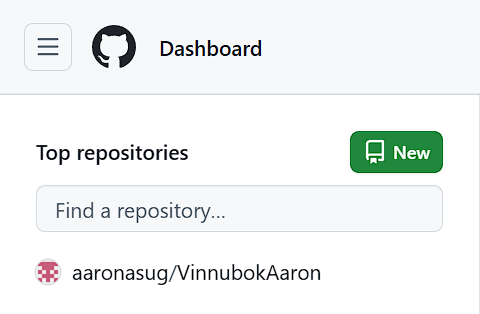
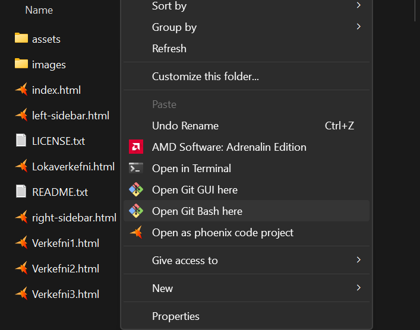
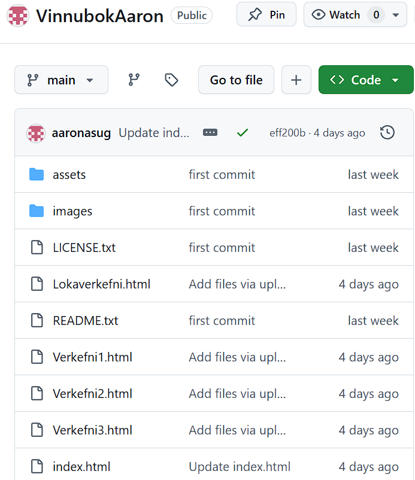
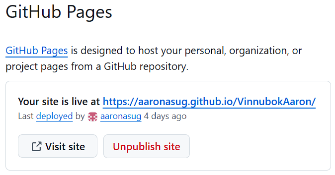
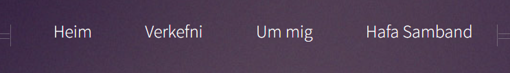
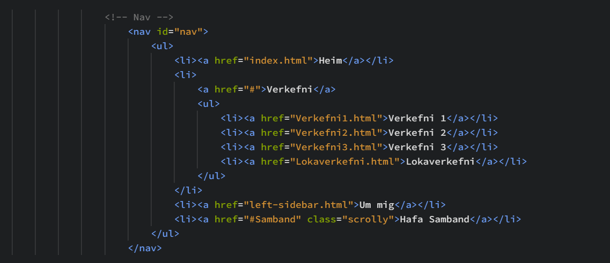
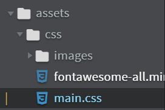
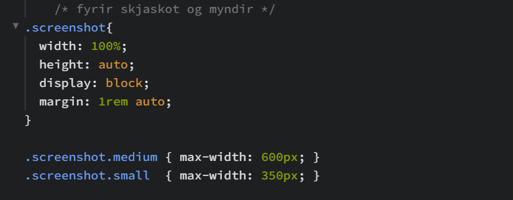

VEFSÍÐUGERÐ OG ÚTGÁFUSTÝRING
UNDIRBÚNINGUR
Ég byrjaði með því að horfa á kennslumyndband fyrir fyrsta verkefnið,
sem hjálpaði mér að átta mig á verkferlinu og komast fljótt af stað.
Að því loknu skoðaði ég sniðmát á HTML5 UP og valdi Helios sem grunn að vefsíðunni.
Til að vinna með kóðann notaði ég Brackets vegna rauntímaforskoðunar (live preview),
sem gerði mér kleift að sjá breytingar strax og fínstilla útlit og virkni eftir þörfum.
Að auki setti ég upp Git Bash til að halda utan um verkefnið og vinna með Git.
UPPSETNING Á GITHUB
Ég bjó til nýtt repository á GitHubinu mínu sem heitir vinnubookAaron.
Mjög auðvelt er að búa til aðganginn sjálfann en þegar það er búið þarf að búa til vefslóð fyrir vefsíðuna sjálfa.

Ég tengdi síðan verkefnamöppuna á tölvunni við repository-ið með Git.
Opnaði svo Git Bash í verkefnamöppunni og
Svo keyri ég þessa skipun til að geta fikrað mig áfram github megin.

echo "#vinnubookAaron" >> README.md
git init
git init
git add README.md
git commit -m "first commit"
git branch -M main
git remote add origin https://github.com/aaronasug/vinnubookAaron.git
git push -u origin main
Þegar verkefnamappan var komin inn á GitHub var hægt að virkja GitHub Pages og fá þar með vefslóð að síðunni,
þannig að vefsíðan varð aðgengileg á netinu í gegnum link sem GitHub útbýr.


BREYTINGAR Á VEFSÍÐUNNI
Þar sem ég hafði litla reynslu af HTML nýtti mér w3schools til að læra grunnatriði,
fyrstu breytingarnar fóru í að uppfæra útlit og texta, skipta út “placeholder” efni og setja inn mitt eigið efni.
Ég breytti valmyndinni þannig að hún vísi á réttar síður og kafla, þar setti ég inn nýjar slóðir fyrir verkefnasíður
(t.d. Verkefni 1–3 og lokaverkefni),
auk tengla á “Um mig” og “Hafðu samband”. Þetta tryggði að hvert val í valmyndinni virkaði eins og til var ætlast.


MYNDVINNSLA
Myndir og skjáskot voru síðan unnin og sett inn á vefsíðuna til að sýna ferlið og niðurstöður verkefnanna.
Þegar ég byrjaði að bæta skjáskotum inn tók ég eftir því að þau pössuðu ekki alltaf vel inn í útlit síðunnar,
sum skjáskot birtust of stór eða ójafnlega í hlutföllum.
Ástæðan var að Helios sniðmátið er fyrst og fremst hannað fyrir ákveðna myndaramma
og hafði ekki tilbúnar CSS-reglur sem hentuðu skjáskotum í texta með litla/millistóra framsetningu.
Til að leysa þetta leitaði ég upplýsinga á netinu og besta leið er að bæta við eigin stílreglum í assets/css/main.css.
Þar skilgreindi ég sérstakan class fyrir skjáskot og notaði meðal annars max-width til að takmarka stærð
myndinna og
height: auto til að tryggja að þær héldu réttum hlutföllum.


LOKASKREF
Þegar ég var búinn að gera allar breytingarnar á vefsíðunni þurfti
ég að uppfæra útgáfuna á GitHub svo nýjasta útgáfan væri aðgengileg í gegnum GitHub Pages.
Ég notaði Git Bash til að skrá breytingarnar, vista þær sem commit og ýta þeim síðan upp í repository-ið.
Fyrst bæti ég öllum breyttum skrám við, síðan geri ég commit með lýsandi skilaboðum
og loks keyri ég push til að senda breytingarnar á GitHub:
$ git add .
$ git commit -m "uppfærsla 1"
$ git push
Eftir þetta uppfærðist vefsíðan á GitHub og nýjasta útgáfan birtist á vefslóðinni sem GitHub Pages býr til.
FRAMHALDA VEFSÍÐUNNAR
Ég mun halda áfram að þróa og bæta vefsíðuna jafnt og þétt samhliða verkefnum áfangans.
Þá langar mig að skoða fleiri áhugaverðar uppsetningar og útfærslur, sérstaklega fyrir næstu verkefni,
í svipuðum anda og framsetningin á ferilskránni minni.
Ég hlakka til að halda áfram að vinna í vefsíðunni og byggja hana upp með hverju verkefni.